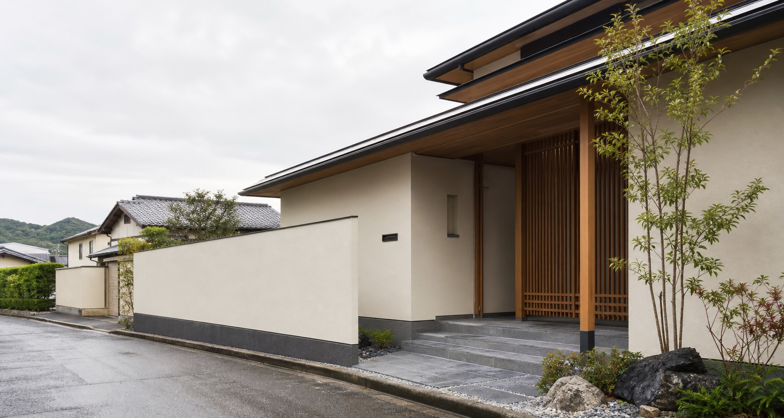
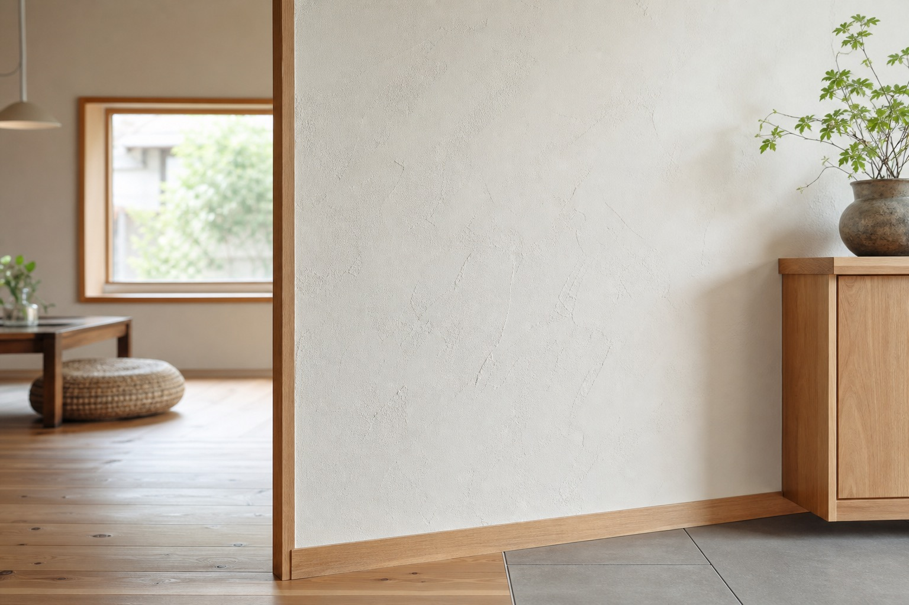
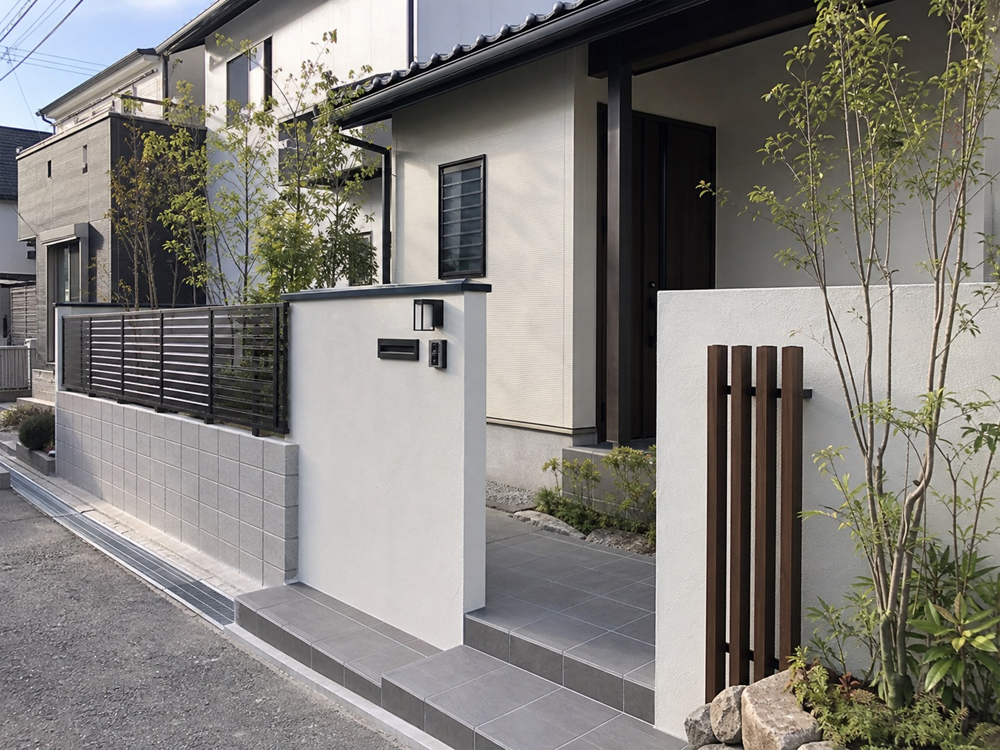
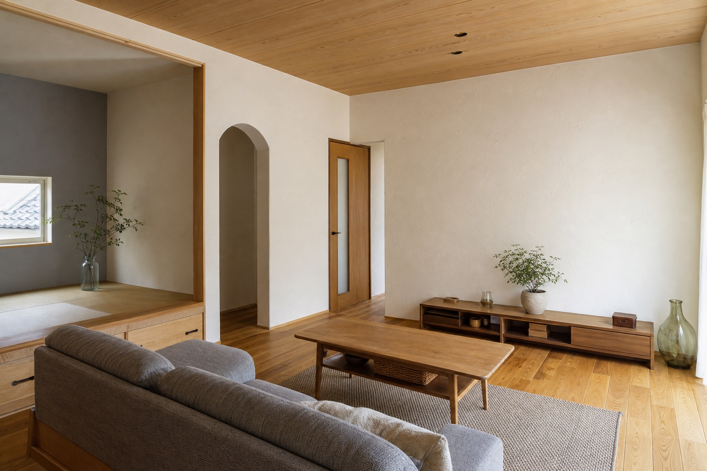
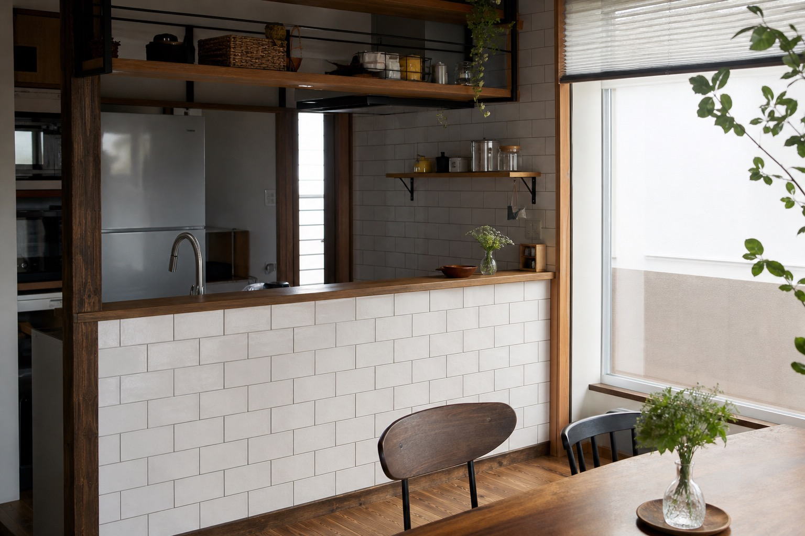

左官工事
漆喰塗り、和室のジュラク塗り、モルタル塗り仕上げなど。土や素材の特徴を活かした提案。
このページは営業提案用サンプルです。公式サイトではありません。

仮画像Kitakyushu / Fukuoka
北九州市小倉北区を拠点に、左官・塗装・タイル・外構・エクステリアまで。店舗と住宅の「見える品質」を支える工事会社です。
What We Refine
有限会社中村工務店は、福岡県北九州市小倉北区の左官業者です。室内の漆喰、外壁や屋根の塗装、玄関まわりのタイル、フェンスやカーポートまで、建物の仕上げと外まわりを幅広く請け負っています。
特に店舗の左官工事を得意とし、納期が決まっている工事や火急対応の相談にも応じる体制が確認できます。お見積りは無料です。

仮画像Services
漆喰塗り、和室のジュラク塗り、モルタル塗り仕上げなど。土や素材の特徴を活かした提案。
内壁、外壁の塗装や塗り壁、屋根塗装、古くなった壁や壊れた箇所の補修。
玄関の外装タイル、キッチン・浴室などの水まわり、店舗内装タイルまで。
新築外構、外装リフォーム、門塀、ブロック、フェンス、カーポート、門扉、物置、ウッドデッキ。
Why Nakamura
長年の実績と技術力、確かな品質と安心感、そして店舗左官工事への対応力。既存サイトに掲載されている強みを、営業先が短時間で理解できるよう整理しました。
Gallery
以下は営業提案用の仮画像です。実在する施工実績名や口コミは掲載していません。

仮画像
仮画像
仮画像Contact Paths
Company
Recruit
既存サイトでは、未経験者歓迎、入社後の技術指導、若い人が活躍できる環境といった採用メッセージが確認できます。詳細条件は公開前に要確認です。
Free Estimate
お見積りは無料。店舗の納期相談、住宅の外壁・屋根・タイル・外構まで、確認できる範囲で最短の相談導線を用意しています。
TEL 093-541-6816